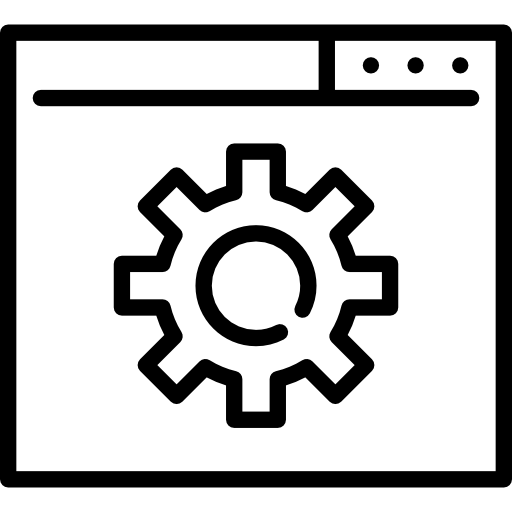

 ¿Que es el Software?
El Software son las instrucciones para comunicarse con el ordenador y que hacen posible su uso. Resumiendo, el software en informática son los programas.Sin el software, las computadoras u ordenadores serían inútiles.Por ejemplo, sin tu software de navegador de Internet (el programa Explorer o Chrome), no podrías navegar por Internet o leer esta página, y sin un sistema operativo, también software, el navegador no podría funcionar. Las aplicaciones y las App en los celulares o móviles son también software.También podríamos decir que el software de un ordenador es la parte que no podemos tocar.
¿Qué tipos de Software existen?
- Software Freeware: todo aquel programa que se distribuya gratuitamente, con ningún coste adicional.También existen autores que lo único que piden es que te registres, es decir, que les digas que usas su programa.
- Software Sharewere: es otra modalidad de comercialización todavía más extendida, el programa se distribuye con limitaciones, bien como versión de demostración o evaluación, con funciones o características limitadas o con un uso restringido a un límite de tiempo establecido (por ejemplo 30 días).
- Software Adware: programas gratuitos en su totalidad pero que incluyen publicidad en su programa. ejemplo de este tipo de programas son muchas appels de juegos que incluyen publicidad.
- Software libre: puede ser de pago o gratuito, pero una vez adquirido el programa, el usuario tiene acceso al código fuente (las instrucciones del programa) y puede modificarlo y/o ampliarlo y redistribuirlo libremente. Un ejemplo de este tipo es el conocido sistema operativo libre es el Linux o también el paquete de oficina Open Office (similar al Office de Microsoft).
- Software de pago: son programas que tienen un costo que hay que pagar por comprarlo para poder usarlo.
Software en Función de su Uso
- Software de Aplicación: son los programas que realizan determinadas tareas típicas humanas, que anteriormente se hacían a mano. En definitiva es aquel que sirve para realizar tareas, facilitando así al usuario su trabajo. Ejemplos son lo procesadores de texto como el Word, hojas de calculo, programas de diseño, de entretenimiento, etc.
- Software de Programación: son aquellos programas que permiten al programador programar, es decir desarrollar otros programas, usando para ello diferentes lenguajes de programación. Ejemplos son los editores de texto para escribir programas en un lenguaje concreto por ejemplo en Java, Pascal o MSDOS, herramientas de diagnóstico de programas, como por ejemplo el programa Everest o Sonia, programas depuradores de código, etc.
- Software de Sistema: Programas que sirven para que el usuario tenga control sobre el ordenador y dar soporte a otros programas. Consiste en software que sirve para controlar e interactuar con el sistema operativo, proporcionando control sobre el hardware del ordenador. El más conocido e importante es Microsoft Windows. Se utiliza, entre otras cosas, para la transferencia de datos entre la memoria RAM y los dispositivos dealmacenamiento (disco rígido, unidades de discos ópticos, etc.). Ya es considerado un sistema operativo en sí. También tenemos un tipo de software especial llamado Firmware. Es un programa de software o un conjunto de instrucciones programadas en un dispositivo de hardware.Proporciona las instrucciones necesarias sobre cómo se comunica el dispositivo con el otro hardware de la computadora.